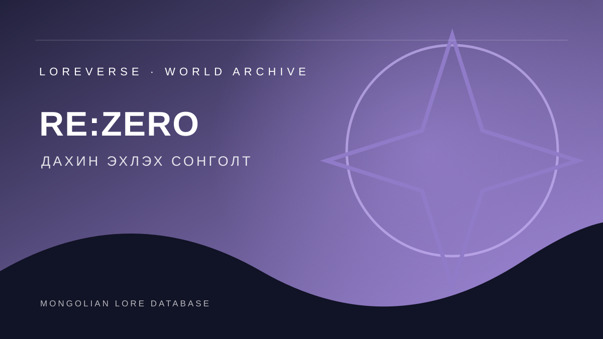

Ертөнц ба түүхэн нөхцөл
Лугника хаант улс болон түүний хөрш улсууд, хаан ширээ залгамжлах сонгууль, хагас хүн ба хүний нийгмийн харилцаа нь ертөнцийн улс төрийн суурь. Шашин, шулам, ариун газар, сүнсний гэрээ нь ер бусын давхаргыг бий болгоно.
Өөр ертөнцөд гэнэт очсон Нацүки Субару аюултай үйл явдлуудтай нүүр тулна. Тэрээр нас барах бүрдээ тодорхой цэгээс дахин эхлэх нууцлаг чадварынхаа улмаас хайртай хүмүүсээ хамгаалах гэж оролдоно.

Лугника хаант улс болон түүний хөрш улсууд, хаан ширээ залгамжлах сонгууль, хагас хүн ба хүний нийгмийн харилцаа нь ертөнцийн улс төрийн суурь. Шашин, шулам, ариун газар, сүнсний гэрээ нь ер бусын давхаргыг бий болгоно.
Return by Death нь Субаругийн үхлээр цаг хугацааг буцаах нууцлаг чадвар боловч бусдад тайлбарлах боломж нь хязгаарлагдмал. Ид шид нь мана, элементийн төрөл, сүнсний гэрээтэй холбоотой. Witch Factors болон Authorities нь ердийн ид шидээс өөр зарчимтай.
Нацүки Субару — гол дүр; Эмилия — хаан ширээний нэр дэвшигч хагас элф; Рэм, Рам — ихэр үйлчлэгчид; Беатрис — номын сангийн сүнс; Райнхард ван Астреа — илдний ариун хамгаалагч; Росваал — Эмилиягийн ивээн тэтгэгч.
Эмилиягийн хуаран, бусад хаан ширээний нэр дэвшигчдийн хуаран, Шуламын шүтлэг, Лугникагийн хааны ордон, сүнсний гэрээтнүүд болон янз бүрийн овог аймгууд.
Субаругийн ирэлт → Эмилиятай уулзах → харшийн давталтууд → Хаан ширээний сонгууль → Ариун газрын сорилт → Цаашдын улс төр, шуламтай холбоотой мөргөлдөөн.
Албан ёсны анимэний сайт: https://re-zero-anime.jp/
Анимэний улирал болон хөнгөн романы цаашдын үйл явдлыг ялган тэмдэглэнэ.
Энэ хуудас нь LOREVERSE-ийн Монгол хэл дээрх фэн судалгааны материал. Албан ёсны бүтээл биш. Канон, дасан зохицуулалт, фэн таамгийг тусад нь тэмдэглэн шинэчилнэ.
Энэ хэсэг нь ертөнцийн дотоод логик, дүрийн зорилго, хүчний дүрэм, улс төрийн нөхцөл болон үйл явдлын шалтгаан-үр дагаврыг нэгтгэнэ. Спойлерын агуулгатай.
Үйл явдал Лугникагийн хаант улс болон хөрш орнуудын дунд өрнөнө. Лууны гэрээ, хаан ширээний залгамжлал, язгууртны гэр бүл, хагас-хүн төрөлхтний ялгаварлал нь улс төрийн суурь зөрчил. Хаан ширээний сонгуульд нэр дэвшигчид өөр өөр нийгмийн төсөөлөл, холбоотон, рыцарьтай.
Мана нь байгаль орчноос авч хэрэглэдэг ид шидийн энерги. Шид нь галт, усан, салхин, газрын, сүүдрийн, гэрлийн зэрэг чиглэлтэй. Сүнстэй гэрээ байгуулж хүч ашиглах боломжтой. Divine Protection нь төрөлхийн ерөөл; Witch Factor нь Долоон Нүглийн шуламтай холбогдох аюултай хүчин зүйл. Subaru-ийн Return by Death нь үхлийн дараа тодорхой цэгээс дахин эхлэх чадвар боловч түүний дүрэм, хязгаар нь бүхэлдээ ил тод биш.
Нацүки Субару — өөр ертөнцөд дуудагдсан, Return by Death-ээр давталт хийдэг; Эмилия — хагас элф, хаан ширээний нэр дэвшигч; Пак — Эмилиагийн гэрээт агуу сүнс; Рэм, Рам — Росваалын эдлэнгийн они охид; Беатрис — хориотой номын сангийн сүнс; Росваал — Эмилиагийн ивээн тэтгэгч; Райнхард — Sword Saint; Отто, Гарфиэл, Фредерика зэрэг дүрүүд дараагийн нумуудад чухал.
Хаан ширээний таван нэр дэвшигч — Эмилия, Круш, Анастасия, Присцилла, Фелт — өөрийн рыцарь, санхүү, улс төрийн холбоотой. Шуламын шүтлэг нь Witch Factor болон Архибишопуудтай холбогдоно. Долоон Нүглийн Архибишопууд нь нэрлэсэн нүглийн эрх мэдлээр аюул үүсгэдэг.
1) Субару Лугникад дуудагдан Эмилиатай уулзана. 2) Эдлэнгийн давталтууд, Рэм-Рамын нууц. 3) Хаан ширээний сонгууль эхэлнэ. 4) Цагаан халим ба Шуламын шүтлэгтэй тулгарна. 5) Sanctuary болон Росваалын төлөвлөгөө. 6) Пристелла дахь Архибишопуудын дайралт. 7) Хожуу нумуудад эзэнт гүрний мөргөлдөөн, дурсамж ба нэрийн хулгай зэрэг аюулууд гарна.
Return by Death — үхлийн дараах дахин эхлэл; Witch Factor — шуламтай холбогдох хүчин зүйл; Authority — Witch Factor эзэмшигчийн онцгой эрх мэдэл; Divine Protection — төрөлхийн ерөөл; Spirit Arts — сүнстэй гэрээ, мана ашиглах урлаг; Royal Selection — хаан ширээний сонгууль.
Анимэ, light novel, web novel-ийн мэдээллийг тусад нь ялгана. Web novel нь зарим хэсэгт light novel болон анимэгаас өөр хувилбар, дараалалтай. Анимэд гараагүй хожуу нууцыг анимэний канон мэт тайлбарлахгүй.